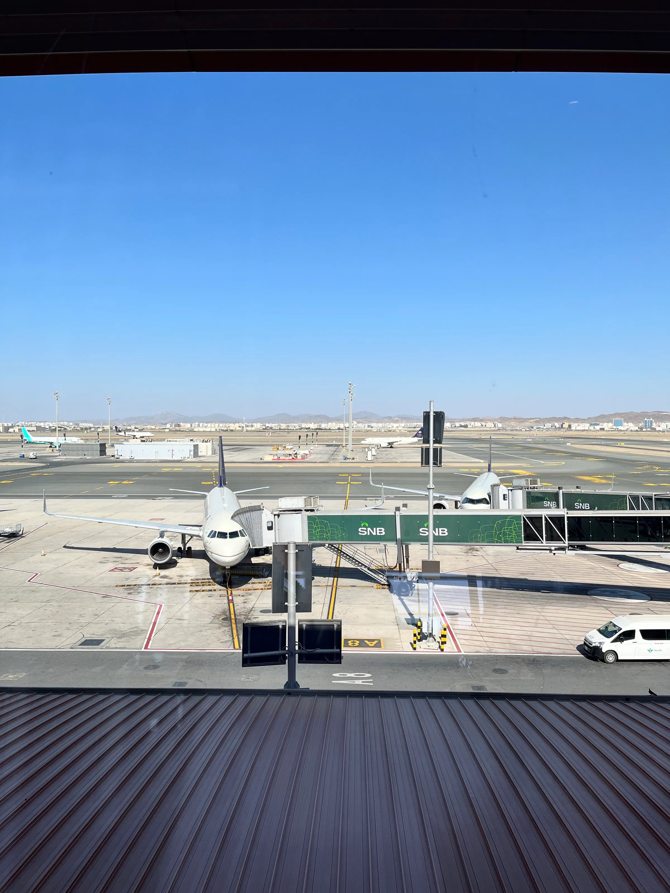

Travel · Getting Around
Jeddah Airport to Makkah — Taxi, Bus & Train Guide (2026 Costs)

Quick answer: King Abdulaziz International Airport (JED) in Jeddah is about 90 km from Masjid al-Haram by road, along Highway 40 — roughly 60–90 minutes by car without traffic. You have four main options: the Haramain high-speed train, Uber or Careem, an airport taxi or pre-booked private transfer, and the bus. Which one suits you depends on your terminal, your luggage, who is travelling with you, and the time your flight lands. If this leg is part of your first Umrah, read it alongside our Umrah for First-Timers guide, and see our Umrah Visa Fees guide for what the visa itself costs before you fly.
1 — The Haramain high-speed train (fastest): The Haramain station sits inside Terminal 1 at Jeddah airport, and the train reaches Makkah station in 54 minutes, stopping once at Jeddah Al-Sulaimaniyah on the way. Trains run roughly 06:05–22:35, about hourly. Economy fares in 2026 are typically SAR 55–90 one way — across dates, times and how full the train is, the range runs about SAR 40–120 — and business class is roughly SAR 100–150. Book on the official site, sar.hhr.sa, or in the HHR app, and book early: fares are priced dynamically, so the cheapest seats go first. One catch at each end. The train only helps if you land at Terminal 1 — from any other terminal you first need a taxi or the airport shuttle to reach the station. And Makkah station is in Ar-Rusayfah, about 3.5 km from Masjid al-Haram, so add a 10–15 minute taxi (about SAR 20–40), the SAR 4 city bus, or the free shuttle when it runs for the last leg. Our Haramain Train guide covers the same railway's Makkah–Madinah route, booking and luggage rules in full.
2 — Uber or Careem (simplest door to door): Both apps pick up at Jeddah airport and take you straight to your hotel door for about SAR 170–260 per car. For a family of four with suitcases, that often works out close to four train tickets plus the station taxi — with none of the lifting. You need a working SIM or eSIM and mobile data to order the ride, and fares surge at peak times, so the same trip costs more on a busy evening than at midday. For late-night arrivals, ride-hailing and taxis are the reliable options: the last train leaves around 22:35, but the apps run through the night.
3 — Airport taxi or pre-booked private transfer: The official taxi rank outside arrivals charges about SAR 200–300 per car to Makkah. Agree the full price before you get in — and use the official rank, not the touts who approach travellers inside the terminal, who often quote SAR 300–500 for the same ride. A pre-booked private transfer starts from about SAR 220 for a sedan: the driver waits at your terminal, helps with the luggage, and drops you at your hotel door at a fixed price agreed before you land — the calmest option after a long flight, and the one we suggest for elderly parents.
4 — The bus (cheapest): The Northwest Bus NW28 runs from the airport to Makkah for about SAR 25–35 per person (listed at SAR 33), taking about 2 hours, roughly hourly from 01:00 to 23:59 — it is also the only public transport that runs deep into the night. SAPTCO coaches cover the route for about SAR 20–45 per person in 2–3 hours. Both drop you at a bus station in Makkah, not at your hotel, so add a short taxi for the final stretch — even so, the bus stays the cheapest way in for a solo traveller with time to spare.
The options side by side (per person unless stated, as of November 2026):
| Option | Typical cost | Time | Door to door? | Best for |
|---|---|---|---|---|
| Haramain train | SAR 55–90 + station taxi | 54 min + last leg | No | Light luggage, Terminal 1 |
| Uber / Careem | SAR 170–260 per car | 60–90 min | Yes | Families, lots of luggage |
| Airport taxi | SAR 200–300 per car | 60–90 min | Yes | No app or no data yet |
| Private transfer | From SAR 220 per car | 60–90 min | Yes | Elderly parents, late arrivals |
| Bus (NW28 / SAPTCO) | SAR 20–45 | 2–3 hrs | No | The tightest budget |
Practical tips for the journey:
- Get connected before you leave the airport. Buy a Saudi SIM or activate an eSIM in the terminal — you need data for Uber and Careem, for the Nusuk app, and for maps, and airport Wi-Fi ends at the door.
- Keep small cash in riyals. The bus fare and the short station taxi are easiest with small notes; not every driver or counter takes a card quickly at busy times.
- Allow extra time in Ramadan and peak season. The highway and the streets around the Haram slow down sharply, and every fare in this guide rises — a 60-minute drive can take two hours.
- Travelling with elderly parents or children? Prefer a pre-booked car or a ride app: one seat, no changes, no carrying bags between platforms. Our Umrah Packing List helps you keep medicines and documents in your hand luggage for the ride.
- Confirm your hotel's exact location. Fares vary with where in Makkah you are dropped — a Clock Tower hotel and an Aziziyah hotel are different journeys, so show the driver the exact address, ideally in Arabic on your phone.
Quick questions:
- What is the cheapest way from Jeddah airport to Makkah? The bus. The Northwest Bus NW28 costs about SAR 33 per person and SAPTCO coaches about SAR 20–45, against SAR 55–90 for the train and SAR 170+ for a car. Buses take about 2–3 hours and drop you at a Makkah bus station, so add a short taxi to your hotel — it is still the cheapest door-to-door total.
- Is there a train from Jeddah airport to Makkah? Yes — the Haramain high-speed train runs from a station inside Terminal 1 to Makkah station in 54 minutes, roughly hourly from about 06:05 to 22:35. Economy is typically SAR 55–90 one way; book at sar.hhr.sa. Makkah station is about 3.5 km from the Haram, so finish with a taxi (about SAR 20–40) or the SAR 4 city bus.
- How long does the taxi take at night? About 60–90 minutes, and often closer to an hour once the roads empty. Taxis and Uber/Careem run through the night, which makes them the practical choice for landings after the last train at around 22:35 — agree the fare, or check the app price, before you set off.
Sources: Umrah My Way — Jeddah Airport to Makkah: Train vs Taxi vs Uber (2026) ↗ · Globly — Jeddah to Makkah: Train vs Bus vs Taxi (2026) ↗ · Welcome Pickups — Jeddah Airport to Mecca Transfers ↗ · The Traveler — Jeddah Airport to Makkah: Best Transfers for Umrah ↗ · Train times and fares per sar.hhr.sa as reported November 2026 — all ranges as of November 2026; confirm the live fare with the operator before paying